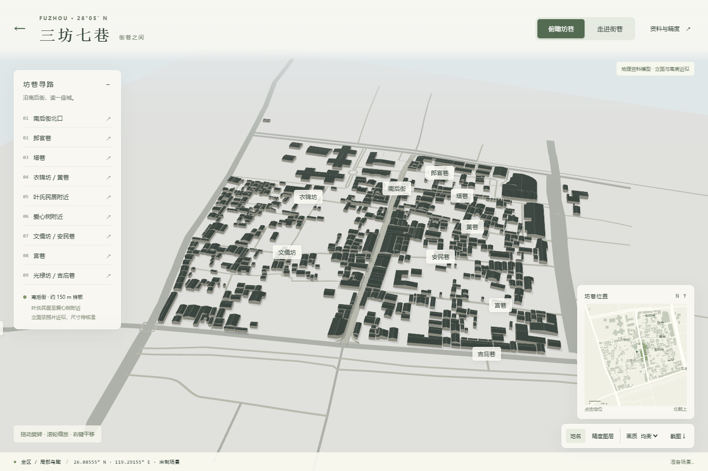
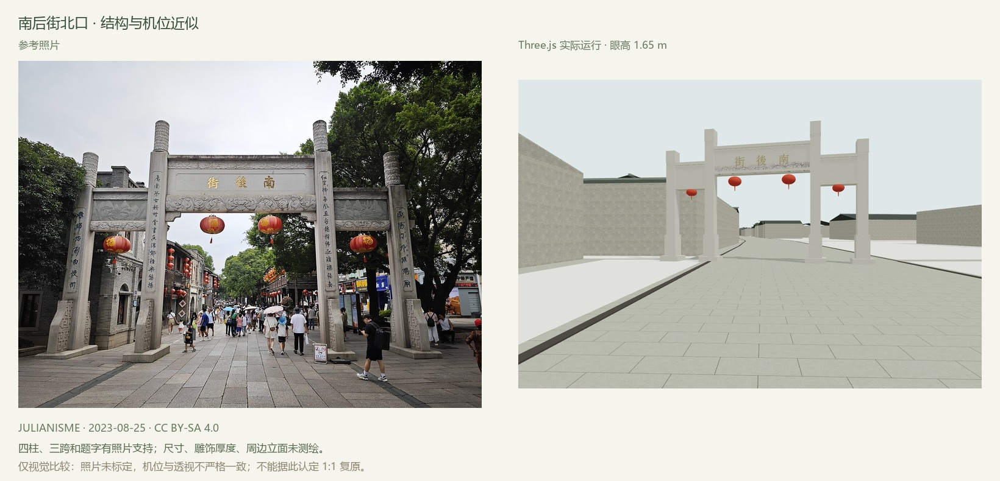
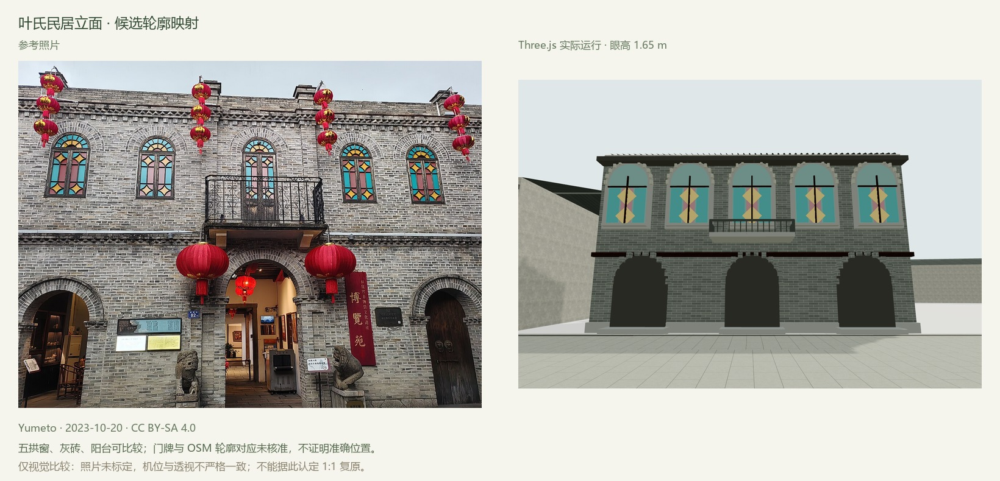
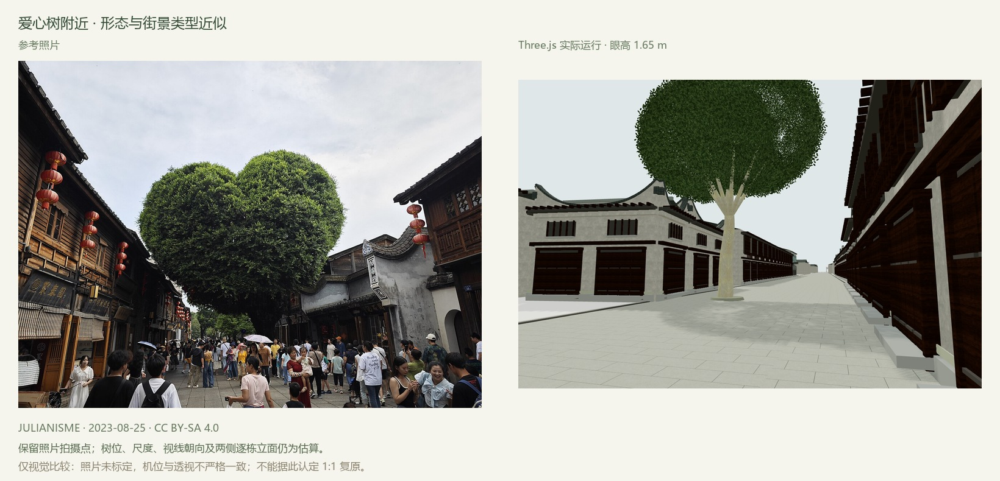
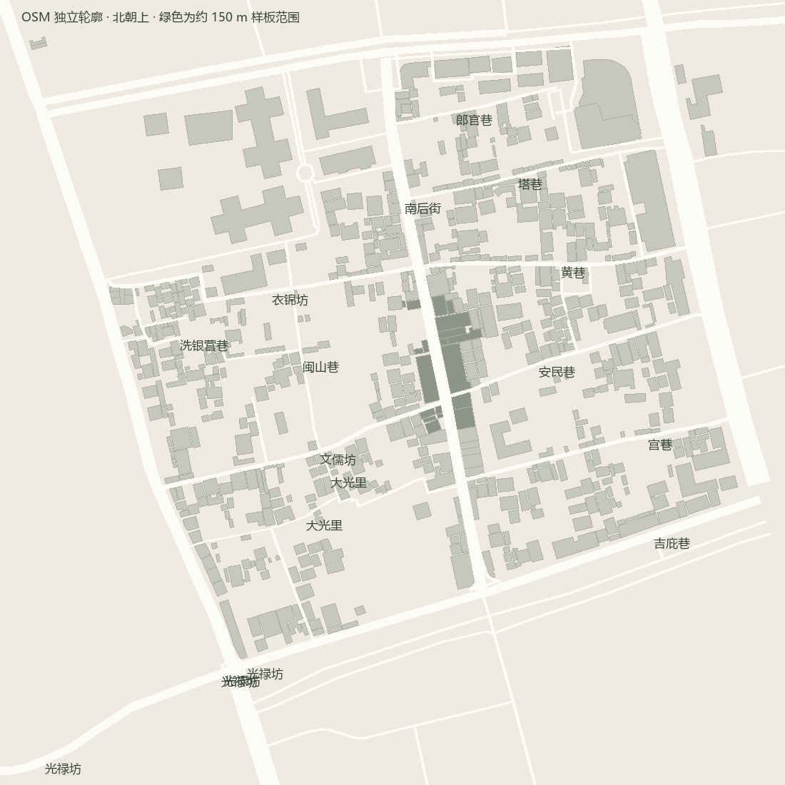
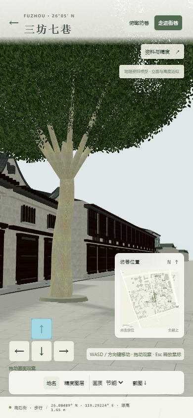

三坊七巷 · 看得见的依据
交付范围：680 个 OSM 轮廓、79 条道路折线、约 150 米 / 19 个轮廓的照片类型近似样板。当前未达到全区 1:1 或摄影级复原；地图高度、道路宽度、建筑立面对应和细节仍有明确估算。
全区鸟瞰

三处人眼视角与照片对照
以下模型图来自 WebGL 画面导出，眼高均为 1.65 米。没有使用生成式图像美化模型。照片未做相机标定，不能作为测量证明。



布局与交互检查


实际运行结果
Chromium 151.0.7922.34；GPU ANGLE (NVIDIA, NVIDIA GeForce RTX 4070 (0x00002786) Direct3D11 vs_5_0 ps_5_0, D3D11)。1440×960 / DPR 1，每项约 3 秒 RAF 帧间隔采样。约 60 FPS 受刷新节流影响，不代表极限性能。
| 场景 | RAF FPS | p95 | draw calls |
|---|---|---|---|
| 均衡 · 全区鸟瞰 | 60 | 16.8 ms | 223 |
| 均衡 · 样板爱心树附近 | 60 | 16.7 ms | 165 |
| 精细 · 样板 | 60 | 16.8 ms | 166 |
| 节能 · 样板 | 60 | 16.7 ms | 161 |
19 项浏览器检查，0 失败；正常运行无脚本错误。原始结果 JSON · 检查范围与限制
范围与缺失
主要街巷位置和共享交点来自 WGS84 OSM。高度、宽窄变化、屋顶结构、门窗及院落缺少测绘资料；叶氏民居立面到具体轮廓的对应未确认。全区已建立体块覆盖，但仅样板含近似细节；未将空白补成假建筑。